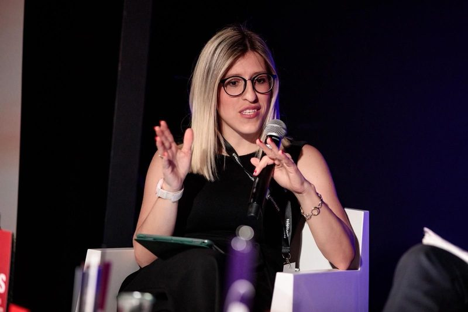
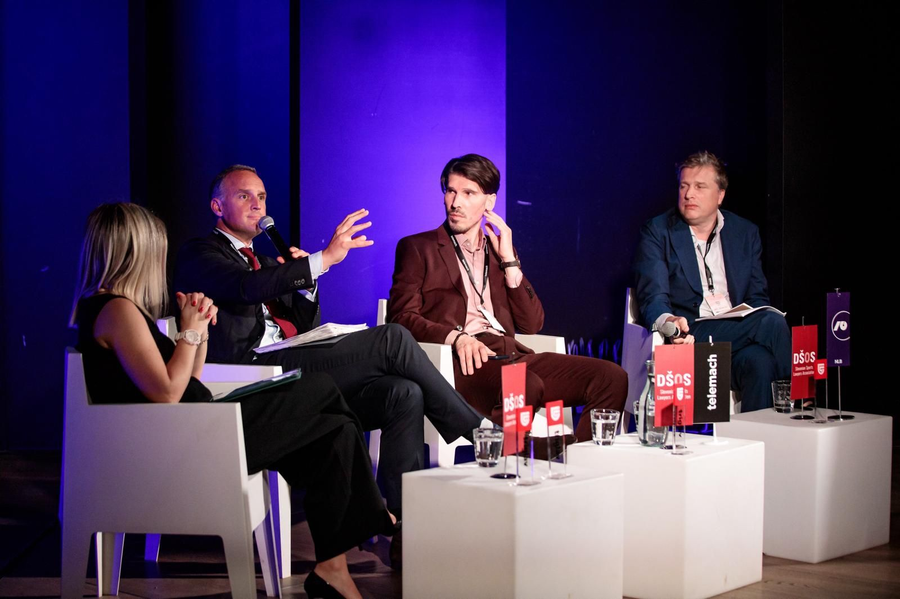
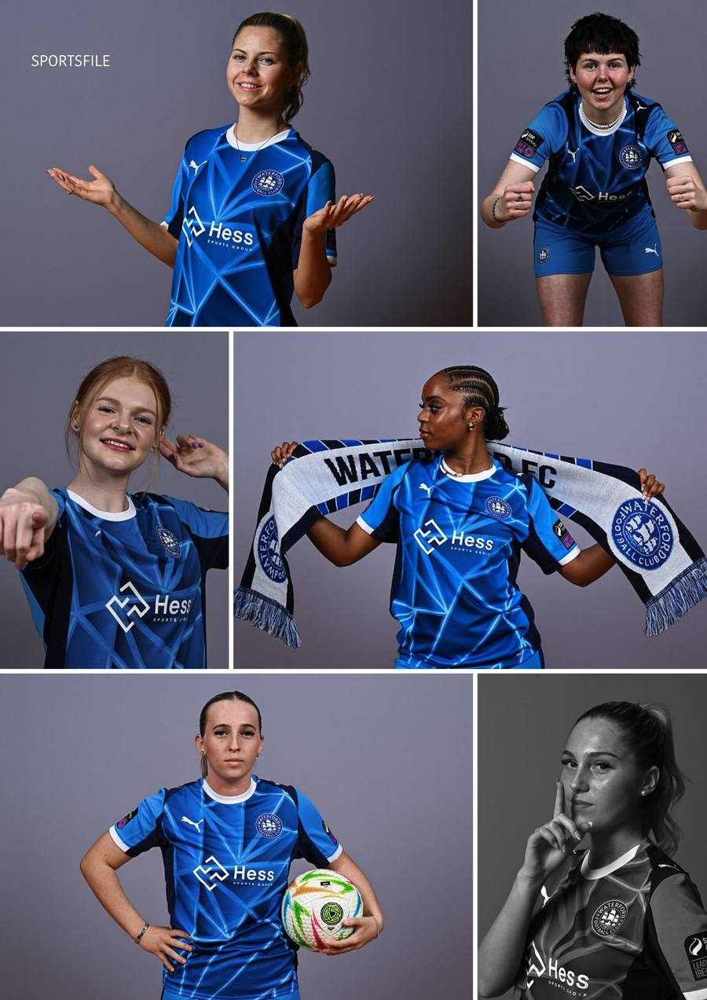
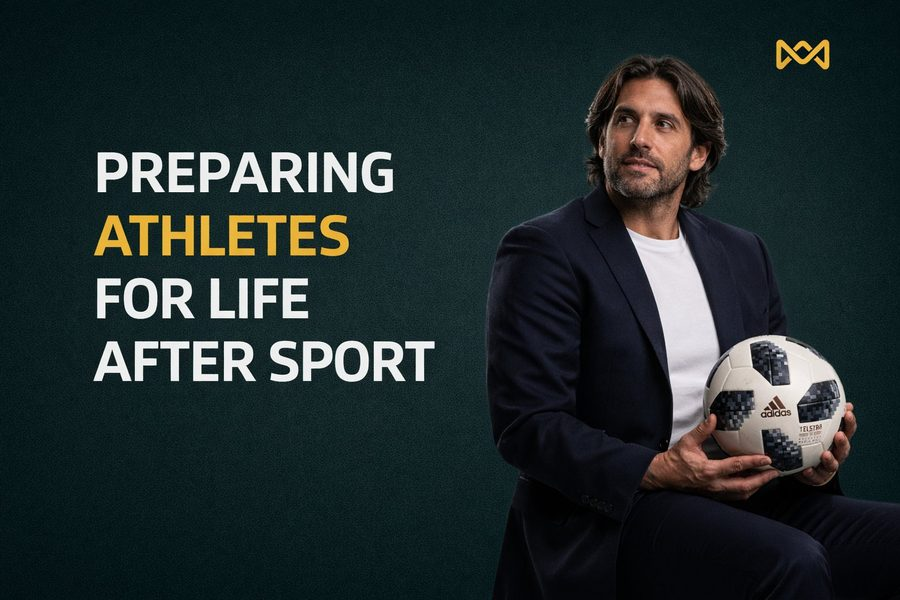
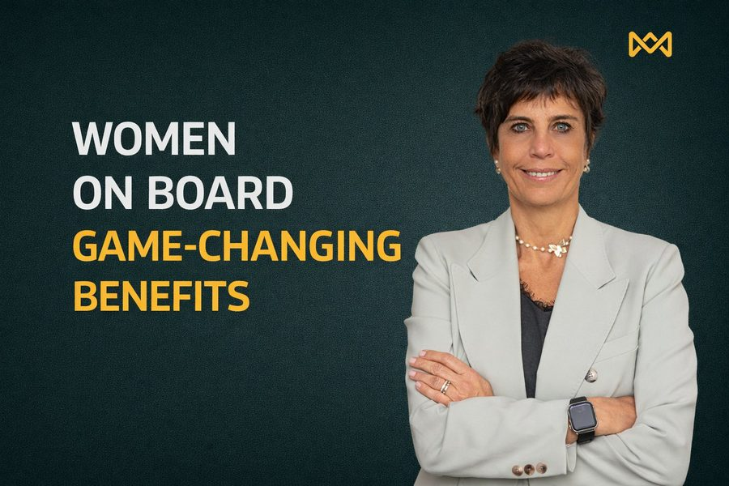
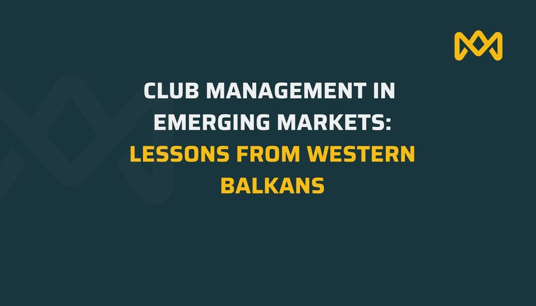
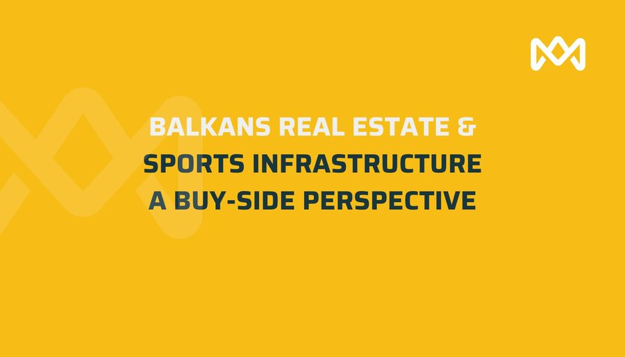

Jasmila Hodžić Moderates Panel on the Future of Football Contracts at Business of Sport
Jasmila Hodžić moderated a panel on the future of player contracts and transfer systems at the Business of Sport in Eastern Europe conference in Ljubljana.
Mentoria is a boutique advisory platform serving athletes, clubs, investors, and executives across the Balkans and beyond — combining sports intelligence, transaction judgement, and executive education in one integrated proposition.
Mentoria brings together specialised expertise across sport, investment and education — creating an integrated platform for high-stakes decisions in a fast-evolving regional market.
Full-spectrum sports management services covering every stage of an athlete's and club's journey — from career advisory to complex legal disputes.
Strategic investment consulting focused on football clubs and the Balkan market — offering deal structuring, portfolio management, and advisory for sophisticated investors.
Professional development programs designed for sports executives, investors, and agents — from FIFA licensing prep to investment strategy courses and financial advisory content.
Our services are designed for real operating environments: clubs under pressure, investors evaluating opportunity, and professionals navigating complex transitions.
Advising athletes and professionals on career direction, contractual decisions, positioning and long-term planning.
Operational and strategic support for football clubs navigating growth, restructuring, governance and performance.
Advisory on contracts, regulatory frameworks, transfer matters and contentious situations across the football ecosystem.
Hands-on support across FIFA TMS processes and transaction execution, from preparation through closing coordination.
Representation and strategic support in disputes before FIFA, UEFA, CAS and relevant national bodies.
Acting for clubs, investors and acquirers assessing players, football assets or strategic entry opportunities.
Supporting clubs, shareholders and stakeholders seeking to maximise value in exits, transfers and negotiated outcomes.
First-mover investment opportunities across emerging Balkan football markets.
Mentoria is a cross-disciplinary platform purpose-built for the Balkans: regionally grounded, internationally fluent, and structured to support clients where strategy, governance and execution intersect.
Deep knowledge of Balkan football, business and institutional dynamics — combined with an international advisory mindset.
A single platform connecting sports advisory, investment thinking and executive education in a coherent client offering.
Licensed FIFA agents, certified advisors, and investment professionals on your side.
"Empowering entrepreneurs and organizations in sports and investment to overcome challenges and secure the path to success."
World-class professionals with proven track records at the highest levels of football, investment, and law.
Sabrina Buljubašić is a senior sports executive, international sports lawyer and former professional footballer. Her experience spans club leadership, strategic development, governance and high-level football operations, giving Mentoria a rare combination of executive judgement and on-the-ground industry credibility.

Jasmila Hodžić is a sports law specialist and senior football executive with deep experience in legal advisory, governance, regulatory matters and institutional leadership. Her work sits at the intersection of football administration, compliance, stakeholder management and long-term strategic development.
Insights & News

SportsJasmila Hodžić moderated a panel on the future of player contracts and transfer systems at the Business of Sport in Eastern Europe conference in Ljubljana.

id="hess-cat" InvestmentSabrina Buljubašić leads Hess Sports Group's mission to grow women's football globally, anchored by a 75% stake in Waterford FC Women.
Jasmila Hodžić has been admitted to the Executive Leadership Programme at Harvard Business School — recognising her expertise in sports law and leadership.

EducationAthletes retire young — but their best skills are exactly what boardrooms need. Mentoria bridges the gap between pitch and C-suite.

SportsWomen hold fewer than 25% of board seats in sports. This isn't just an equity issue — it's a governance crisis with real consequences for football's future.

SportsThe Western Balkans are a masterclass in lean club management — proving you don't need a Premier League budget to build a centre of excellence.

InvestmentSports infrastructure in the Western Balkans is an under-capitalised asset class — and for buy-side investors, that gap represents a compelling value-add opportunity.